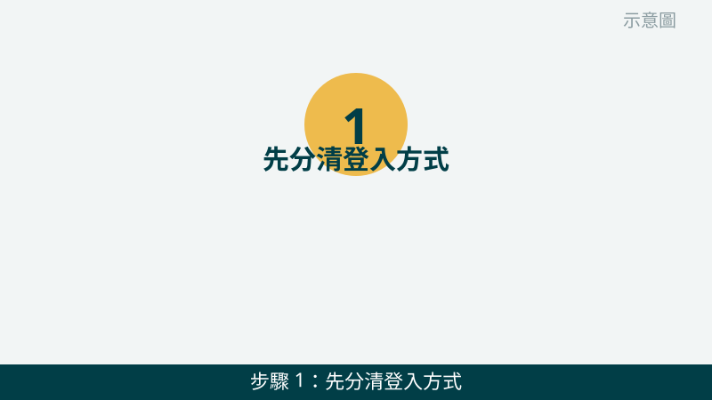
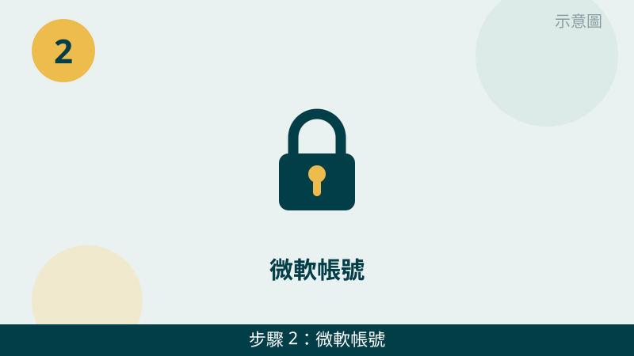
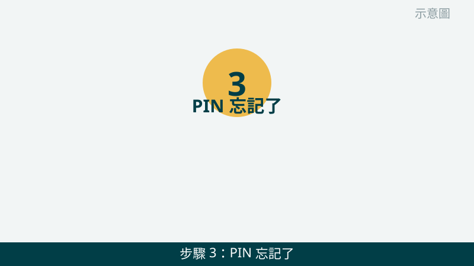
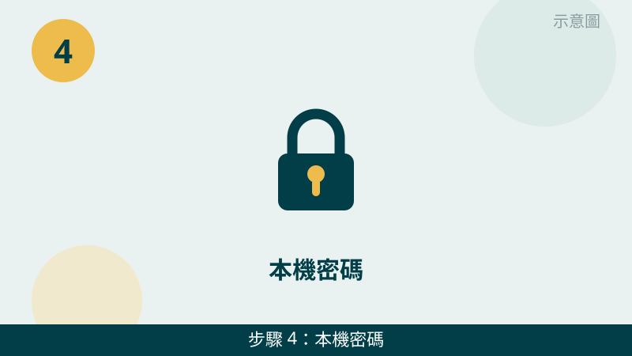
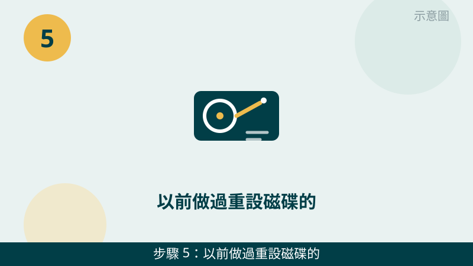
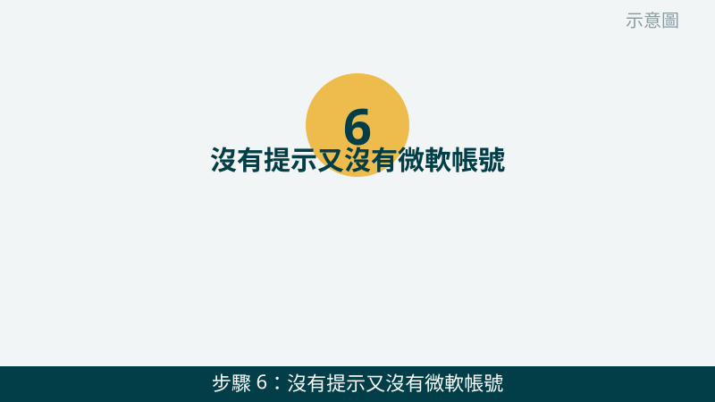

忘記開機密碼確實很焦急，但請先放心：找回的方向，完全看您當初是用哪一種方式登入。微軟帳號可以線上重設，PIN 有自己的忘記流程，本機密碼則要看密碼提示和重設磁碟。先分清是哪一種，再往下對照，不要用錯方法一直試。
開始之前先跟您說明一個重要前提：本文只針對您自己的電腦。如果這台電腦不是您的，或您無法證明是您的，請不要嘗試任何找回或重設的方法，先跟電腦的擁有者確認。接下來的步驟，也都只走微軟官方重設、密碼提示、重設磁碟這類正規方向。
登入畫面先傳給我們看
把登入畫面（是微軟帳號、PIN 還是本機密碼的欄位）拍下來傳 LINE，登入方式一看就知道往哪個方向查。先免費評估、報價透明，確認後再預約維修。
台中電腦忘記開機密碼自救檢查清單（由簡到難）
- 1. 先分清登入方式：微軟帳號、PIN 還是本機密碼。請看登入畫面寫什麼：顯示電子郵件信箱的，多半是微軟帳號；顯示輸入 PIN 碼的，就是 PIN；只顯示使用者名稱、要輸入密碼的，多半是本機密碼。怎麼判斷：方式分清楚了，後面的找回方向才不會走錯；分不清楚時，請把登入畫面拍下來傳給我們看。

示意圖（非官方截圖） - 2. 微軟帳號：先用另一台裝置線上重設。如果您是微軟帳號登入，請用另一台手機或電腦，到微軟帳號的密碼重設頁面，照微軟的驗證流程重設，例如用您當初留的備用信箱或手機驗證，重設成功後再回這台電腦用新密碼登入。怎麼判斷：線上重設成功、能登入了，就是帳號密碼問題；驗證資訊收不到，請先拍照問我們，不要把帳號密碼交給不認識的人。

示意圖（非官方截圖） - 3. PIN 忘記了：先走登入畫面的忘記 PIN 流程。如果您平常是用 PIN 登入，請在登入畫面點「我忘記 PIN」這類選項，照畫面指示，用您的微軟帳號驗證後重新設定一組新的 PIN。怎麼判斷：驗證通過、能設新 PIN，就是 PIN 忘記的問題；畫面沒有忘記 PIN 的選項，或驗證過不了，請先拍照問我們。

示意圖（非官方截圖） - 4. 本機密碼：先看密碼提示，再慢慢回想。如果您是本機密碼，請先看登入畫面有沒有出現您當初設的密碼提示，那句話常常就是想起密碼的關鍵；同時確認鍵盤大小寫鎖定（Caps Lock）有沒有誤開、輸入法有沒有切錯。怎麼判斷：提示想起來了、能登入了，就是一時忘記；提示也想不起來，再往第 5 步看。

示意圖（非官方截圖） - 5. 以前做過重設磁碟的，先用重設磁碟重設。如果您以前曾經為這台電腦做過密碼重設磁碟（通常是一支隨身碟），請把那支隨身碟插上，在登入畫面照重設精靈的指示重設一組新密碼。怎麼判斷：有重設磁碟、照步驟完成，就能設新密碼登入；沒有做過重設磁碟，就沒有這條路，請不要隨便拿別人的隨身碟來試。

示意圖（非官方截圖） - 6. 沒有提示又沒有微軟帳號：重灌是最後手段，重灌前先問。如果本機密碼沒有提示、沒有重設磁碟、又不是微軟帳號，通常只剩下重灌這條路，而且重灌後資料會不見。請務必先停手，先拍照問我們，確認電腦裡有沒有重要資料、還值不值得先想辦法保資料，確認清楚再決定要不要重灌，不要自己直接重灌。怎麼判斷：資料不重要、確認要重灌，才走到這一步；資料重要，一律先問再動。

示意圖（非官方截圖）
別再自己試了
- 這台電腦不是您的，請不要嘗試任何找回、重設或進入系統的方法
- 來路不明的破解工具、繞過密碼的教學不要下載、不要照做，以免帳號或資料出問題
- 不要把自己的微軟帳號密碼交給不認識的人，也不要在別人的電腦上登入您的帳號重設
- 資料很重要、又走到重灌這一步時，請先拍照問我們，不要自己直接重灌
常見問題
忘記開機密碼，資料一定會不見嗎？
不一定。如果您用的是微軟帳號或 PIN，線上重設成功後，原本的資料通常還在；如果您用的是本機密碼，又沒有密碼提示、也沒有重設磁碟，最後走到重灌這一步時，資料就會不見。所以在走到重灌之前，請先停手，拍照問我們，確認還有沒有其他正規的找回方向。
微軟帳號密碼也忘了，怎麼辦？
請先用另一台手機或電腦，到微軟帳號的密碼重設頁面，照微軟的驗證流程重設，例如用您當初留的備用信箱或手機驗證。驗證資訊如果也都收不到了，請先拍照問我們，不要下載來路不明的破解工具，也不要把帳號密碼交給不認識的人處理。
沒有密碼提示又沒有微軟帳號，是不是只能重灌？
通常是的，本機密碼又沒有提示、又沒有重設磁碟時，重灌是最後的手段，而且重灌後資料會不見。所以重灌之前請務必先停手，先拍照問我們，確認電腦裡有沒有重要資料、還值不值得先想辦法保資料，確認清楚再決定要不要重灌。
相關文章：自救百科總覽